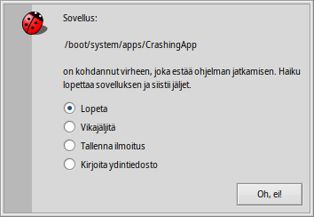

Suomi
Suomi Català
Català Deutsch
Deutsch English
English Español
Español Français
Français Italiano
Italiano Magyar
Magyar Polski
Polski Português
Português Português (Brazil)
Português (Brazil) Română
Română Slovenčina
Slovenčina Svenska
Svenska 中文 ［中文］
中文 ［中文］ Русский
Русский Українська
Українська 日本語
日本語 Vianjäljitin
Vianjäljitin
| Työpöytäpalkki: | ||
| Sijainti: | /boot/system/apps/Debugger | |
| Asetukset: | ~/config/settings/Debugger settings ~/config/settings/Debugger/ |
Vianjäljitin on sovellus, jolle tavallisella käyttäjällä ei ole paljoa käyttöä. Se on kohdistettu ohjelmistokehittäjille ohjelmien virheiden tutkimista varten. Joskus nuo virheet aiheuttavat kaatumisen ja niissä tapauksissa myös loppukäyttäjät joutuvat tekemisiin Vianjäljittäjän kanssa. Kun ohjelma kaatuu, kohtaat tämän hälytyksen:
Se tarjoaa neljä valitsinta kaatumiseen reagoimiseen:
putsaa kaatuneen sovelluksen jätteen, mutta ei tee muuta.
käynnistää Vianjäljittimen lisätutkimuksia varten.
luo mahdollisesti valtavan kokoisen vedoksen järjestelmän tilasta. On parempi liittää ensiksi normaali vianjäljitysilmoitus, kun vikailmoitus lähetetään ja tarjota ydintiedosto vasta pyydettäessä.
luo vianjäljitysilmoituksen, joka tallennetaan Työpöydän tekstitiedostoon ja voidaan lähettää sähköpostiviestissä kaatuneen sovelluksen kehittäjälle tai liittää vianjäljitysohjelman vikalistaan, jos sellainen on käytettävissä.
Vianjäljitysilmoitus sisältää tietoja laitteistostasi (prosessorityypistä ja käytetystä muistista jne.), Haikun tarkasta versiosta ja kaikesta saatavilla olevasta tiedosta järjestelmän siitä tilasta, joka voisi olla olennaista kaatumiselle.
Oletustoiminto kaatumisen tapahtuessa voidaan asettaa tekstitiedostossa ~/config/settings/system/debug_server/settings.
Tiedosto käyttäää driver_settings-tyylimuotoa seuraavasti:
default_action user
executable_actions {
app1 log
/path/app2* debug
}
Kelvolliset default_action-arvot ovat:
| user | Käyttäjätoiminnon kehote | |
| kill | Kaatumisryhmän hiljainen päättäminen. | |
| debug | Vianjäljittimen liittäminen kaatumisryhmään. | |
| log / report | Tallenna kaatumisilmoitus ja lopeta ryhmä. | |
| core | Tallenna (mahdolliset hyvin suuri) ydintiedosto ja lopeta ryhmä. |
Jos default_action-oletustoimintoa ei ole määritelty, käytetään toimintoa ”user”.
Alilohko executable_actions sisältää oletusarvojen yksittäisiä korvauksia. Nämä noudattavat yllä olevaa muotoa, jossa yksittäisinä riveinä voi olla vain ryhmänimi, tai polku, sisältäen jokerimerkkejä.
Todellisen Vianjäljittäjän käytön kuvaaminen ei kuulu tämän opasteen aihepiiriin, koska tämä on osoitettu Haikun tavallisille käyttäjille. Täydellisyyden vuoksi tässä on ikkuna, joka tulee näkyviin, jos valitset -valitsimen yllä olevasta hälytyksestä:

Kuten nopeasti näet, jos alat tutkimaan sovellusta, Vianjäljitin on yksi monimutkaisimmista ja kehittyneimmistä Haikun sovelluksista. Jos olet kehittäjä ja olet käyttänyt muiden alustojen vianjäljittimiä, monet ominaisuudet ovat sinulle tuttuja.
Alla on muutamia linkejä, jotka tuovat hiukan valoa Haikun Vianjäljittäjän monimutkaisuuteen. Jos sinulla on tietty kysymys, voit harkita sen lähettämistä kehityspostituslistalle. Jos löydät lisää resursseja, tee niistä tiedoista vikailmoitus.
| Debugger Reference Manual | Tämä on kaikkein perusteellisin lähde Vianjäljittimen kanssa työskentelyyn. | |
| Blogposts | Tässä on muutamia artikkeleita Vianjäljittäjästä, tekijänä enimmäkseen Rene Gollent uuden ominaisuuden toteutuksen jälkeen. | |
| BeGeistert 026 video | Video BeGeistert-kokoontumisesta vuonna 2012, jolloin Ingo Weinhold esitteli Vianjäljittimen silloista tilaa ja näytti muita mielenkiintoisia työkaluja kuten profiloija pullonkaulojen etsimiseen. |